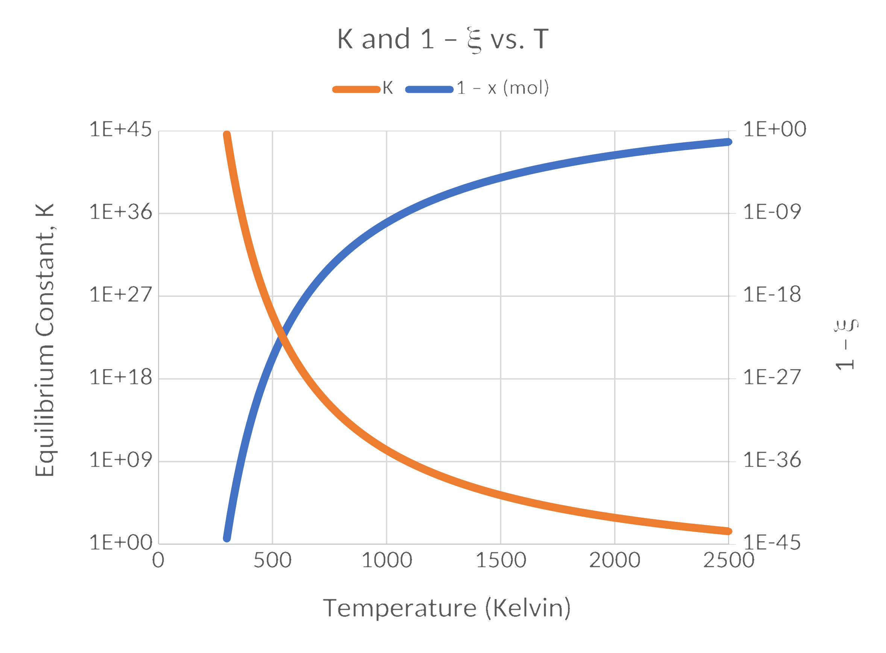
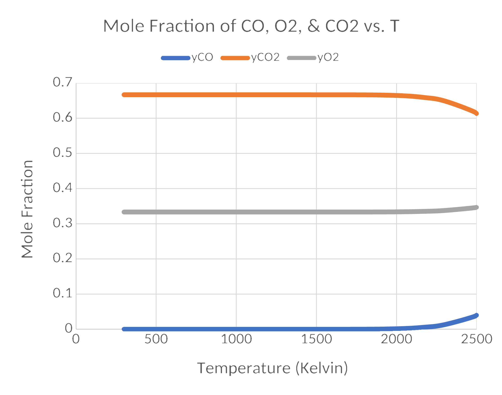
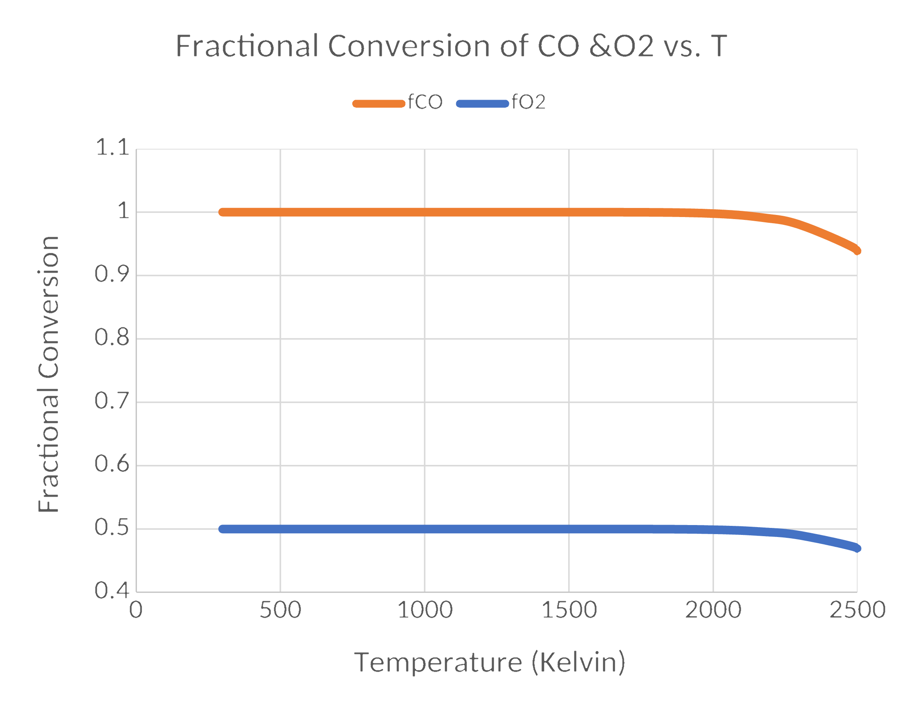

React But Maintain Your Equilibrium
Part 1
Just The Facts
DOFPro Team

Chemical Equilibrium
From Thermodynamics, equilibrium is reached when the total Gibbs Energy is minimized. Mathematically the criterion is:
\[ \sum \nu_i G^\circ_i + RT \sum \ln \hat{a}_i^{\nu_i} = 0 \]
or rearranged
\[ \prod \hat{a}_i^{\nu_i} = \exp \left( - \frac{\sum \nu_i G^\circ_i}{RT}\right) \equiv K \]
The \(\hat{a}_i\) are the activities of the various species where
Chemical Equilibrium (cont.)
\[ \hat{a}_i \equiv \frac{\hat{f}_i}{f^\circ_i} \]
\(\hat{f}_i\) is the fugacity of species i in solution.
\(f^\circ_i\) is the reference fugacity of species i.
\(\sum \nu_i G^\circ_i\) is often written as \(\Delta G^\circ\) and is similar to \(\Delta H^\circ\).
\(K\) is the equilibrium constant. It varies only with temperature.
Chemical Equilibrium (cont.)
What are the units of \(K\)?
For ideal gases (see upcoming videos) the fugacity in solution is numerically equal to the partial pressure, and the reference fugacity is the ideal gas state at the system \(T\) and a pressure of 1 bar.
With these substitutions:
\[ K = \prod \hat{a}_i^{\nu_i} = \prod \left( \frac{p_i}{\mathrm{1\ bar}}\right)^{\nu_i} \]
or
\[ K\ (\mathrm{1\ bar})^\nu = \prod p_i^{\nu_i} \]
\(K\) is still dimensionless but may not appear to be.
Mole Fractions
Often problems are posed in mole fractions instead of partial pressures. Since for an ideal gas (see Ideal Gases EXPOSED: Are They Even Real?!)
\[ y_i = \frac{p_i}{P} \]
then
\[ p_i = y_i P \]
Substituting
\[ K\ (\mathrm{1\ bar})^\nu = \prod (y_i P)^{\nu_i} =P^\nu \prod (y_i)^{\nu_i} \]
or
Mole Fractions (cont.)
\[ K\ (\mathrm{1\ bar})^\nu P^{-\nu} =\prod (y_i)^{\nu_i} \]
which is where we will begin. There are later videos that go into more detail about the earlier steps and explain when you’d need them. For the present we’ll only deal with equilibrium reactions involving ideal gases and pure solids.
As a reminder, \(K\) depends only on temperature but the equilibrium composition depends on total pressure and the presence of inerts.
With a fair amount of calculus one can show that
\[ \frac{d \ln K}{dT} = -\frac{\Delta \hat{H}^\circ_r}{RT^2} \]
which, if the enthalpy of reaction is constant with temperature integrates to
\[ \ln\frac{K}{K_1} = -\frac{\Delta \hat{H}^\circ_r}{R} \left(\frac{1}{T} - \frac{1}{T_1} \right) \]
Example
Carbon monoxide and oxygen are fed in equimolar ratios to an isothermal combustor. If the reaction proceeds to equilibrium calculate the fractional conversion of \(\mathrm{CO}\) and \(\mathrm{O_2}\) as the reactor temperature varies from \(300\ \mathrm{K}\) to \(2500\ \mathrm{K}\).
Solution
\(\mathrm{CO +\frac{1}{2} O_2 = CO_2}\) \(\Delta G^\circ = -281,885 + 85.678 T\ \mathrm{[J/mol]}\)
\(\nu_\mathrm{CO} = -1\) \(\nu_{\mathrm{O_2}} = -0.5\) \(\nu_{\mathrm{CO_2}} = 1\) \(\nu = -1 - 0.5 + 1 = -0.5\)
\[ K\ (\mathrm{1\ bar})^\nu P^{-\nu} =\prod (y_i)^{\nu_i} \]
\[ K\ (\mathrm{1\ bar})^{-0.5} P^{0.5} = \frac{y_{\mathrm{CO}_2}}{y_{\mathrm{CO}} y^{0.5}_{\mathrm{O}_2}} \]
Example (cont.)
\[ y_\mathrm{CO} = \frac{n_\mathrm{CO_{out}}}{n_\mathrm{out}} = \frac{n_\mathrm{CO_{in}} + \nu_\mathrm{CO}\xi}{n_\mathrm{in} + \nu \xi} \]
\[ y_\mathrm{CO_2} = \frac{n_\mathrm{CO_{2_{out}}}}{n_\mathrm{out}} = \frac{n_\mathrm{CO_{2_{in}}} + \nu_\mathrm{CO_2}\xi}{n_\mathrm{in} + \nu \xi} \]
\[ y_\mathrm{O_2} = \frac{n_\mathrm{O_{2_{out}}}}{n_\mathrm{out}} = \frac{n_\mathrm{O_{2_{in}}} + \nu_\mathrm{O_2}\xi}{n_\mathrm{in} + \nu \xi} \]
What is missing?
\(P\) and either \(n_\mathrm{O_{2_{in}}}\) or \(n_\mathrm{CO_{in}}\).
Pick a basis of one mole.
Assume \(P = 1\ \mathrm{bar}\).
Example (cont.)
\[ \frac{\left(\frac{0+\xi}{2-0.5\xi}\right)}{\left(\frac{1-\xi}{2-0.5\xi}\right)\left(\frac{1-0.5\xi}{2-0.5\xi}\right)^{0.5}} = K(\mathrm{1\ bar})^{-0.5}(\mathrm{1\ bar})^{0.5} \]
\[ \frac{\left( 2 - 0.5 \xi \right)^{0.5}}{\left( 1-0.5 \xi \right)^{0.5}}\frac{\xi}{1-\xi} = K \]
For \(\xi \rightarrow 0\), \(\xi = K/\sqrt{2}\).
For \(\xi \rightarrow 1\), \(\xi = \frac{K / \sqrt{3}}{1 + K / \sqrt{3}}\) or \(1 - \xi = \frac{1}{1+K/\sqrt{3}}\).
Results
Results (cont.)
Results (cont.)
The Takeaways
- For reactors with multiple reactions occurring, there is often one desired reaction product and one or more undesired reaction product.
- The yield is the fraction of the desired product that could be produced that is actually produced..
- The selectivity is the ratio of the desired product to the undesired products.
- Don’t confuse mole fraction, \(x_\mathrm{A} = n_\mathrm{A}/(\sum n_i)\), split fraction, \(t_{A1} = \dot{n}_\mathrm{A1}/\dot{n}_\mathrm{Ain}\), and fractional conversion.\(f_\mathrm{A} = (\dot{n}_\mathrm{A_{in}} - \dot{n}_\mathrm{A_{out}})/\dot{n}_\mathrm{A_{in}}\).
Thanks for watching!
The Full Story companion video is in the link in the upper left. The companion video, React But Maintain Your Equilibrium Part 1, in the series, is in the upper right. To learn more about Chemical and Thermal Processes, visit the website linked in the description.